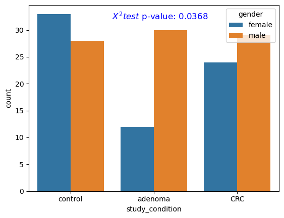
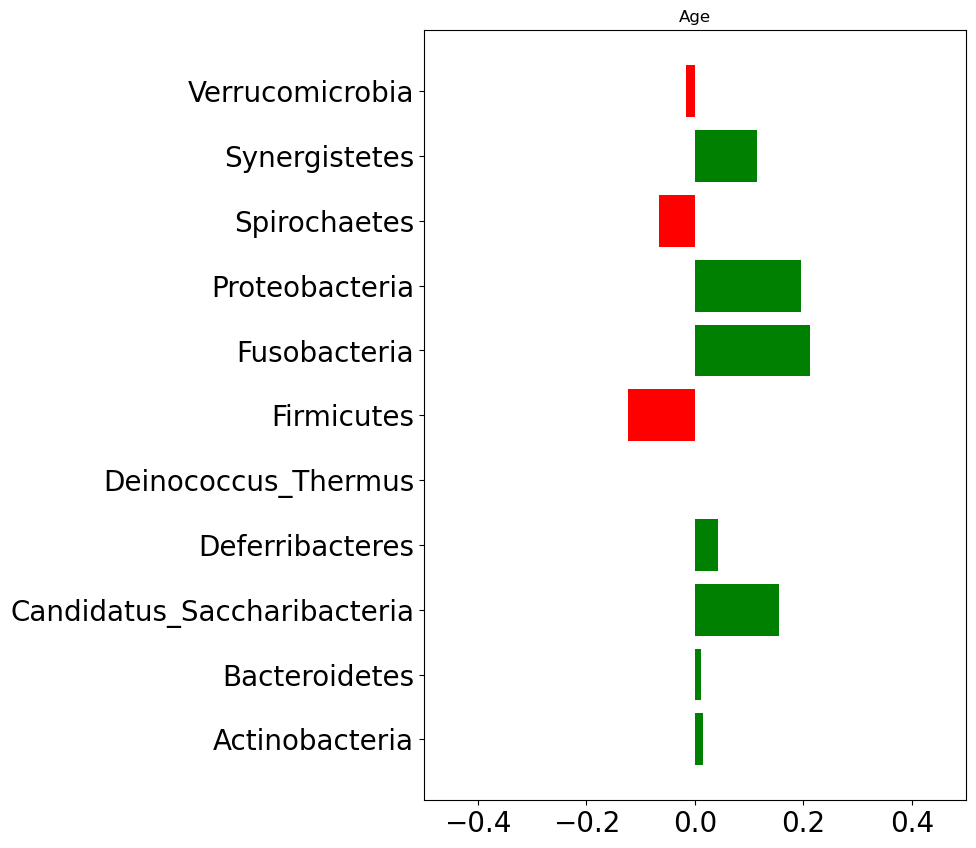
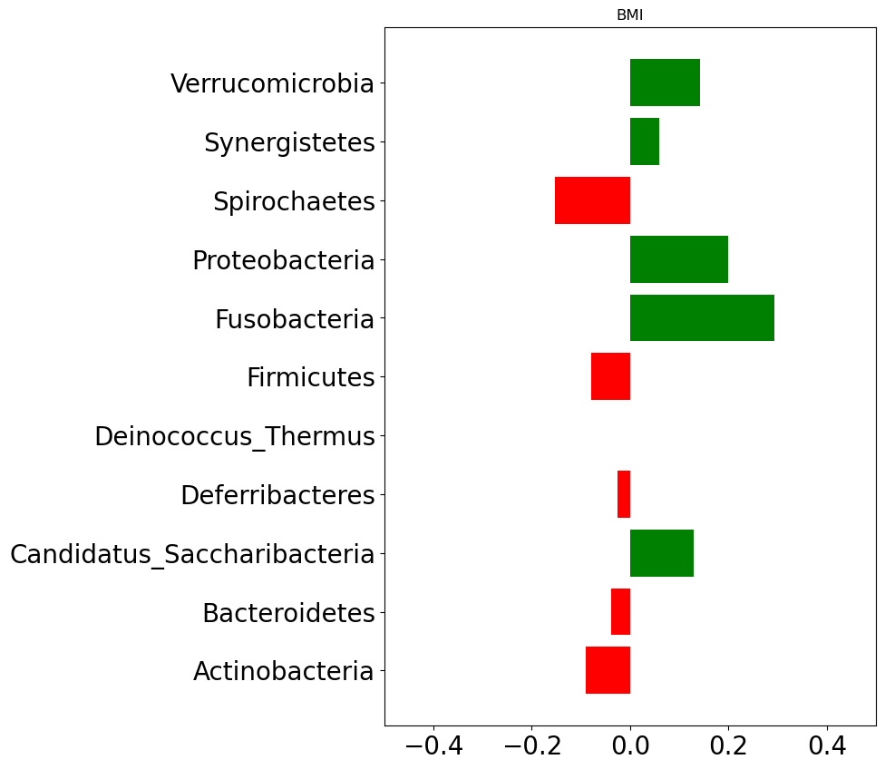
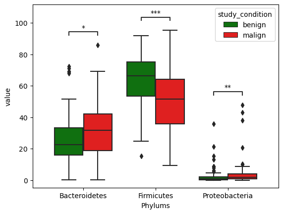
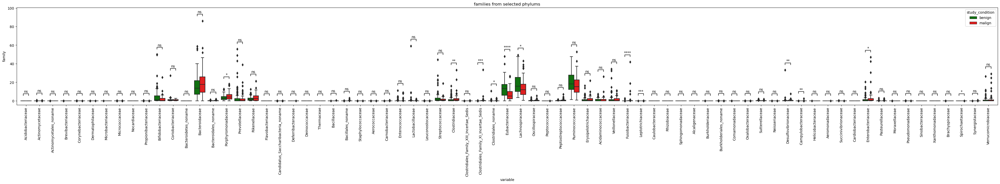

Increasing research has found the association between microbial dysbiosis and CRC. Basing on that, we will check for differences in microbial composition of control and CRC cases. We will also investigate statistical significance of differences if found any.
7.1 Association between host’s characteristics and CRC
We will now investigate for statistical differences among target classes in terms of patient demographics.
7.1.1 Age, BMI, and CRC
We start by investigating statistical significance of differences between age of control and CRC casese. For this test, we use Mann-Whitney test to investigate statistical significance of differences.
The below figures show that **there are statistical significant differences between control and CRC groups.
Age
We found statistical differences in age of control and CRC group.
Show the code
from skbio.diversity import alphafrom statannot import add_stat_annotation# functions to process the data and prepare in a format supporting phyloseq analysisdef get_sample_table(df): df = df[metadata_colnames] df = df.set_index('subjectID') df.drop(['dataset_name','sampleID'],axis=1,inplace=True)return dfdef get_otu_taxa_table(df):""" This function returns otu table that contains relative abundance of species where columns are species and rows are cases. Args: df (dataframe): Dataframe of realtive abundance and metadata """ df = df[bacteria_colnames + ['subjectID']] df.columns = ["OTU_{}".format(str(ind)) for ind, col inenumerate(bacteria_colnames)] + ['subjectID'] df.index = df['subjectID'] taxa_table = get_taxa_table(bacteria_colnames)return df, taxa_tabledef get_taxa_table(list_of_otus):""" This function parse all present microbial species at different heirarchy levels, e.g., class, order, phylum. """ otu =0 mapping = {} taxa_cols = ['kingdom','phylum','class','order','family','genus','species'] df = pd.DataFrame(columns=taxa_cols) otu_mapping = {} otu_ids = []for ind, otu inenumerate(list_of_otus): tmp = {}for col in taxa_cols: tmp[col] = get_specific_label(otu, col) tmp_df = pd.DataFrame([tmp]) df = pd.concat([df,tmp_df], ignore_index=[0]) otu_id ="OTU_{}".format(str(ind)) otu_mapping[otu] = otu_id otu_ids.append(otu) df['OTU'] = ['OTU_{}'.format(str(ind)) for ind in df.index] df = df.set_index('OTU')return dfdef get_specific_label(l, t):""" This function parse the taxonomic assignment lable and fetch the specified information (e.g., kingdom, family) Args: l (str): string of taxonomy t (str): string specifying the requested information (e.g., kingdom, family, genus, etc.) Returns: str: requested heirarichal info """ taxa_order = {'kingdom':0,'phylum':1,'class':2,'order':3,'family':4,'genus':5,'species':6}try: specific_label = l.split('|')[taxa_order[t]]return specific_label.strip().split('__')[1]except:return'Unknown'def get_otu_detail(taxa_table, otu_label, rank):return taxa_table[otu_label][rank]def aggregate_by_taxonomy(otu_table, taxa_table, taxa_rank):""" This function aggregates data based on specified taxa rank (e.g., kingdom, class, order, phylum, genus, species). """ unique_values = (taxa_table[taxa_rank].unique())# mapping for otus to unique value of chosen taxa rank taxa_to_otu = {}# prepare the mappingfor unique_value in unique_values: tdf = taxa_table.loc[taxa_table[taxa_rank] == unique_value, :] otus = tdf.index.to_list() taxa_to_otu[unique_value.strip()] = otus# create a dictionary for formulating expressions taxa_to_exp = {}for key in taxa_to_otu.keys(): taxa_to_exp[key] ='{} = 0.000001'.format(key)for otu in taxa_to_otu[key]: taxa_to_exp[key] +=' + '+ otu otu_table[otu] = pd.to_numeric(otu_table[otu], errors='coerce') agg_df = otu_tablefor key, expr in taxa_to_exp.items(): agg_df[key] =0 agg_df = agg_df.eval(expr, engine='python') agg_df = agg_df[list(unique_values)]return agg_df def extend_with_alpha(df, metadata_features):""" This function extends the dataframe with alpha diversity measures. Args: df: dataframe metadata_features: list of metadata feature names Returns: dataframe: extended dataframe with alpha diversity features """ diversity_measures = pd.DataFrame() alpha_diversity_metrics = ["chao1","shannon","simpson","simpson_e","fisher_alpha","berger_parker" ] shannon_diversity = df.apply(lambda x: alpha.shannon(x), axis=1) chao1_diversity = df.apply(lambda x: alpha.chao1(x), axis=1) simpson_diversity = df.apply(lambda x: alpha.simpson(x), axis=1) simpson_e_diversity = df.apply(lambda x: alpha.simpson_e(x), axis=1) fisher_diversity = df.apply(lambda x: alpha.fisher_alpha(x), axis=1) berger_parker_diversity = df.apply(lambda x: alpha.berger_parker_d(x), axis=1) diversity_measures['shannon'] = shannon_diversity diversity_measures['chao1'] = chao1_diversity diversity_measures['simpson'] = simpson_diversity diversity_measures['simpson_e'] = simpson_e_diversity diversity_measures['fisher_alpha'] = fisher_diversity diversity_measures['berger_parker'] = berger_parker_diversity X_alpha = diversity_measures.reset_index().drop(['subjectID'], axis=1) X_extended = pd.concat([metadata_features,X_alpha],axis=1)return X_extended# convert data tables into otu and taxa tableotu_table, taxa_table = get_otu_taxa_table(zeller_db)# aggregating data at higher levelsphylum_agg = aggregate_by_taxonomy(otu_table, taxa_table, 'phylum')genus_agg = aggregate_by_taxonomy(otu_table, taxa_table, 'genus')order_agg = aggregate_by_taxonomy(otu_table, taxa_table, 'order')color_palette = {'control':'green','adenoma':'orange','CRC':'#c80000'}order = ['control', 'adenoma', 'CRC']x ='study_condition'pairs = [ ('control','adenoma'), ('control','CRC'), ('adenoma','CRC'),]metadata = zeller_db[metadata_colnames]# changing data type of age and BMImetadata['age'] = pd.to_numeric(metadata.age, errors='coerce')metadata['BMI'] = pd.to_numeric(metadata.BMI, errors='coerce')
We now check the distribution of gender across different target groups (i.e., control, adenoma, CRC). We employ the Chi-squared test to investigate the statistical significance of differences in gender distribution across different groups.
Figure 7.2 shows the frequency count of males/females across control, adenoma, and CRC groups. The differences were found to be statistically significant (p-value < .05).
Gender
We also found statistical differences in gender between control, adenoma and CRC group.
Show the code
from scipy.stats import chi2_contingency# Create a contingency tablecontingency_table = pd.crosstab(metadata['gender'], metadata['study_condition'])# Apply Fisher's Exact Testchi2, p_value, dof, expected = chi2_contingency(contingency_table)# new figureplt.figure()# plot frequency plotsns.countplot(data=metadata, x='study_condition',hue='gender')# add p-valueplt.text(0.5, 32, f'$X^2 test$ p-value: {p_value:.4f}', fontsize=12, color='blue')plt.show()

Figure 7.2: Gender distribution
7.2 Association between host’s characteristics and species abundance
We will now explore for association between host’s characteristics (e.g., age, BMI) and species relative abundace. Figure 7.3 below shows correlation between host’s characteristics and phylum level abundance data.
Firnicutes, Spirochaetes, and Verrucomicrobia phylum levels are negatively correlated with age. That means as a person gets older these three phylum levels tend to get decreased.
In case of BMI, Spirochaetes, Firnicutes, Deferribacteres, Bacteroidetes, and Actinobacteria are found negatively correlated. That implies an increase in BMI (which could be taken as an indication of obesity) is associated with decrease in those phylums.
Show the code
# plotting distributiondef extend_abundance_metadata(df,meta):""" This function extends abundance data with metadata information. Args: df (DataFrame): relative abundance data meta (DataFrame): host's characteristics Returns: DataFrame """return pd.concat([df,meta],axis=1)# relative abundance aggregation at #family_abundance = aggregate_by_taxonomy(otu_table, taxa_table, 'family')genus_abundance = aggregate_by_taxonomy(otu_table, taxa_table, 'genus')phylum_abundance = aggregate_by_taxonomy(otu_table, taxa_table, 'phylum')metadata_ = metadata.set_index(metadata['subjectID'])# plot age correlation plotphylum_metadata = extend_abundance_metadata(phylum_abundance,metadata_[['age']])phylum_corr = phylum_metadata.corr()plt.figure(figsize=(7,10))data_plot = phylum_corr['age'].drop('age')bars = plt.barh(data_plot.index, data_plot, color=np.where(data_plot >0, 'green', 'red'))plt.xlim([-.5,.5])plt.yticks(fontsize=20)plt.xticks(fontsize=20)plt.title('Age')plt.show()# plot bmi correlation plotphylum_metadata = extend_abundance_metadata(phylum_abundance,metadata_[['BMI']])phylum_corr = phylum_metadata.corr()plt.figure(figsize=(7,10))data_plot = phylum_corr['BMI'].drop('BMI')bars = plt.barh(data_plot.index, data_plot, color=np.where(data_plot >0, 'green', 'red'))plt.xlim([-.5,.5])plt.yticks(fontsize=20)plt.xticks(fontsize=20)plt.title('BMI')plt.show()phylum_metadata_ = phylum_metadata.copy()phylum_metadata_['study_condition'] = metadata_['study_condition'].apply(lambda x: 'malign'if x =='CRC'else'benign')df = phylum_metadata_.melt(id_vars='study_condition',value_vars=phylum_agg.columns)

(a) Correlation between age and phylum level abundance

(b) Correlation between BMI and phylum level abundance
Figure 7.3: Correlation with phylum abundace
Figure 7.4 (c) below shows differences in microbial composition in terms of phylum level abundance among benign and malign tumors. We can notice three phylums differ among benign and malign tumor groups. Those phylums are Proteobacteria, Firnicutes, and Bacteroidetes.
We combined control with adenoma to create benign tumor class, and CRC class renamed as malign tumor.
7.3 Exploring Barteroidetes, Firmicutes, and Proteobacteria for theis association with CRc
We go further checking whether these differences are statistically significant or not. We employ Mann-Whitney test which is a non-parametric test for checking significance of differences in values from two independent groups.
Figure 7.5 below shows distributions of abundance at phylum levels across benign and malign cases for all three selected phylumns. The differences were found to be statistically significant.
Show the code
color_palette = {'benign':'green','malign':'red'}# selected phylums for statistical analysisselected_phylums = ['Firmicutes','Proteobacteria','Bacteroidetes']# extracting only selected phylum datadf_selected = df.loc[df['variable'].isin(selected_phylums),:]# pairs for statistical testpairs = [ (('Firmicutes','benign'), ('Firmicutes','malign')), (('Proteobacteria','benign'), ('Proteobacteria','malign')), (('Bacteroidetes','benign'), ('Bacteroidetes','malign'))]# creating a new figureplt.figure()# plotting boxplotax = sns.boxplot(data=df_selected, x='variable', y='value',hue='study_condition', palette=color_palette)# adding statistical annotation from Mann-Whitney testax, test_results = add_stat_annotation(ax, box_pairs=pairs, data=df_selected, x='variable', y='value', hue='study_condition',hue_order=['benign','malign'], test='Mann-Whitney', text_format='star',comparisons_correction=None, loc='inside', verbose=False)plt.xlabel('Phylums')plt.show()

Figure 7.5: Phylum differences among benign and malign cases
Lets go further and check which genus and species under these phylums are statistically different in terms of relative abundance among benign and malign tumors.
Show the code
taxa_selected = taxa_table.loc[taxa_table['phylum'].isin(selected_phylums),:]# fetching species related to selected phylumsselected_species_cols =list(taxa_table['species'].unique())# fetching genus related to selected phylumsselected_genus_cols =list(taxa_table['genus'].unique())# fetching family related to selected phylumsselected_family_cols =list(taxa_table['family'].unique())# fetching order related to selected phylumsselected_order_cols =list(taxa_table['order'].unique())# fetching order related to selected phylumsselected_class_cols =list(taxa_table['class'].unique())
Show the code
from statannotations.Annotator import Annotatordef plot_selected_taxa(selected_taxa, plot_at,figsize=(7,15),log_scale=False,title=""):""" Args: ---- selected_taxa(str): taxa which are selected for further exploration taxa_abun_df (dataframe): relative abundance data at taxa plot_at (str): taxa at which distribution will be plotted for benign and malign tumors """ df_abundance = aggregate_by_taxonomy(otu_table, taxa_table, plot_at) metadata_ = metadata.set_index(metadata['subjectID']) taxa_abundance_selected = df_abundance[selected_taxa] taxa_abundance_selected['study_condition'] = metadata_['study_condition'].apply(lambda x: 'malign'if x =='CRC'else'benign') pairs = []for col in taxa_abundance_selected.columns:if col !='study_condition': pairs.append(((col,'benign'),(col,'malign'))) plt.figure(figsize=figsize) plot_df = taxa_abundance_selected.melt(id_vars='study_condition',value_vars=selected_taxa) ax = sns.boxplot(data=plot_df,x='variable',y='value',hue='study_condition', palette=color_palette) add_stat_annotation(ax, box_pairs=pairs, data=plot_df, x='variable', y='value', hue='study_condition',hue_order=['benign','malign'], test='Mann-Whitney', text_format='star',comparisons_correction=None, loc='inside', verbose=False) ax.set_ylabel(plot_at) plt.xticks(rotation='vertical')if log_scale: ax.set_yscale('log') plt.title(title) plt.show()
Show the code
plot_selected_taxa(selected_family, plot_at='family', figsize=(50,5),title='families from selected phylums')

Show the code
plot_selected_taxa(selected_genus, plot_at='genus', figsize=(80,5),title='genus from selected phylums')